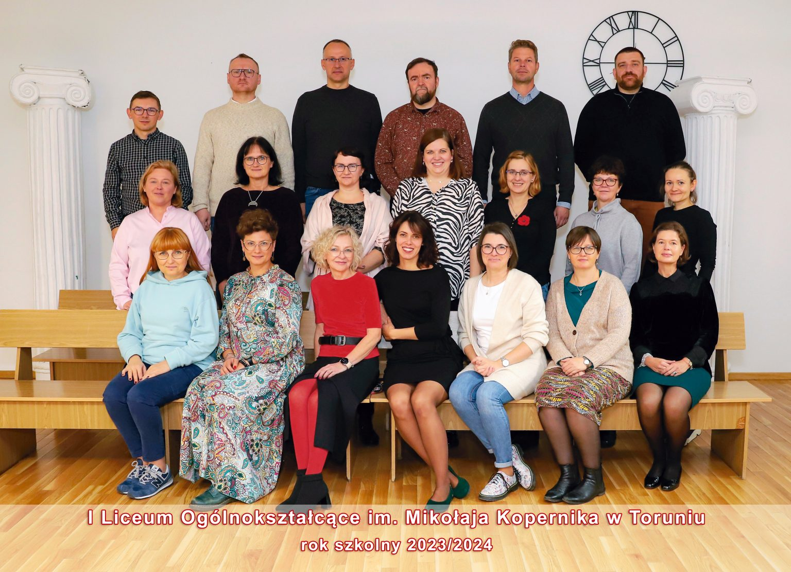
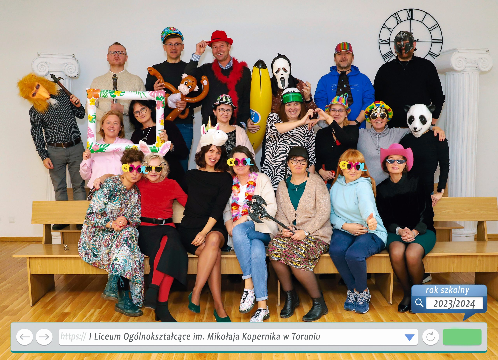
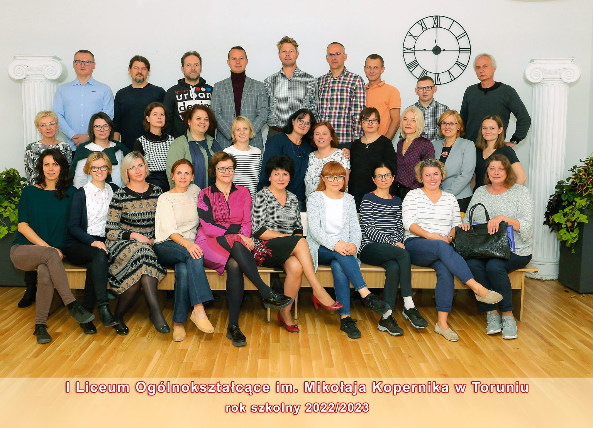
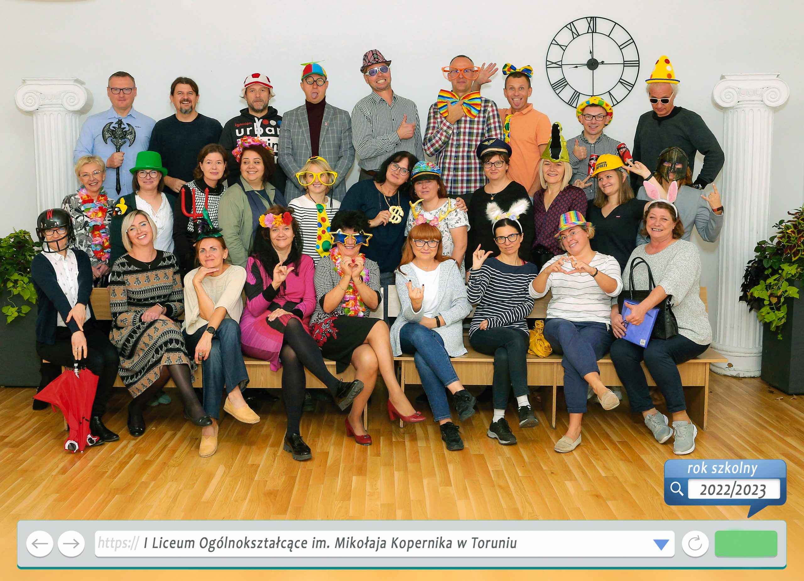

Nasz zespół
Rok szkolny 2023/2024
 📷 Zdjęcia wykonała firma "Vega"
Rok szkolny 2022/2023
 📷 Zdjęcia wykonała firma "Vega"
Kontakt
Dyrekcja szkoły
📞 56 622-79-33
📧 sekretariat@lo1.edu.torun.pl
Biblioteka
📧 biblioteka@lo1.edu.torun.pl
Pomoc psychologiczno-pedagogiczna
Zobacz pełne informacje →Sekretariat
🕐 Poniedziałek-Piątek: 8:00-15:00
📞 56 622-79-33
📧 sekretariat@lo1.edu.torun.pl